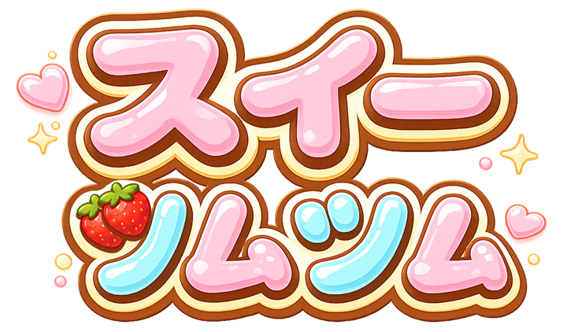
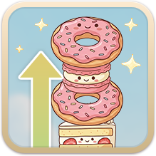
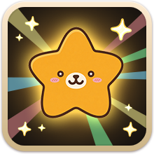
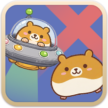

ログ
ハムスター ON
UFO呼ぶ
落下中央 OFF
コライダー OFF
スコア
0
つんだかず
0
オプション
あそびかた
あきらめる
つづきをプレイ
崩壊ログ
とじる
きけん

✨ スイーツをたくさんつもう！ ✨
🏆 ベスト
0
あそびかた
はじめる
あそびかた

スイーツをたくさんつもう！

ほしはフィーバータイム
タップでガンガンつもう！
ズレもなおしてくれるよ！

おじゃまハムスターは
スイーツをとっていくから
よけよう！
ヒント
🍽️ おさらは←→にうごくよ
👆 タップでおちるスピードがアップ
🌡️ ズレにちゅういしてね
とじる
つづける？
📺 こうこくを見ると
くずれるまえから
つづけられるよ！
こうこくを見てつづける
やめる
けっか
✨ NEW RECORD! ✨
ごうけいスコア
0
+0 pt
タイトルへ